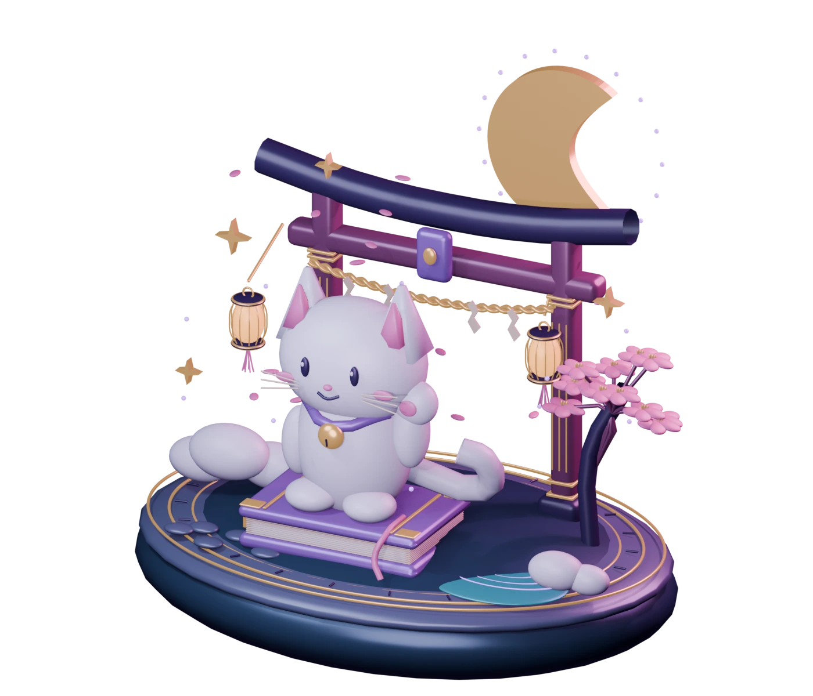

The next “one more episode”
Discover anime, explore seasons, and find a show that fits your mood.
/anime discover ↗WELCOME TO YOUR ANIME CORNER
Find your next favorite. Keep your watchlist close. Turn “we should watch that” into a night with your people.
Free to invite · Private lists by default · Made with care

29focused commands
6anime command groups
Yours, by defaultprivate watchlists & notes
SCULPTED, LIT & ANIMATED IN BLENDER
Three original scenes. Eight-second animation loops. Choose a world to explore.
Select a scene, then choose Explore in 3D. Drag to orbit, scroll to zoom, and use the animation controls. Reduced motion is respected.
SMALL THINGS, BETTER TOGETHER
Discover anime, explore seasons, and find a show that fits your mood.
/anime discover ↗Save your next watch, track episodes, and keep personal notes just for you.
/anime list ↗Plan watch parties, vote on club picks, and keep the conversation going.
/anime club ↗Type this in your server. Hikari will take it from there.
A LITTLE HELP, ONE SLASH AWAY
Browse the bot’s active commands and their subcommands. Discord’s command picker shows required options and permissions.
The command library could not load. Try refreshing, or use /help in Discord.
MAKE YOURSELF AT HOME
Bring Hikari in, choose a few channels, and let your club make it their own. All server settings are managed inside Discord.
You’ll need Manage Server permission. Discord shows the requested bot permissions before you authorize; Administrator is not requested.
Add to Discord ↗Use /configwizard for the basics. Keep Hikari’s role above roles it should manage, and allow it to view and send messages in your anime channels.
Use /anime admin to choose channels, spoiler rules, and optional conversation starters. New servers have scheduled conversation starters switched off.
Find a show with /anime discover search, then plan a night with /anime club party. Members can start privately with /anime list add.
YOUR STORIES, YOUR CHOICE
Hikari is built for communities. That starts with respecting the people in them.
Anime watchlists, ratings, and episode notes start private. Club parties, discussions, polls, and anything you deliberately post in a channel can be seen by people with access to it.
Use /anime list privacy for sharing choices. Use /anime list export and /anime list delete for your data controls in Discord. Consent is required for member comparisons.
This website contains public command descriptions and original artwork. It has no Discord sign-in, server management access, personal watchlists, or live member data.
The running bot stores the records needed for your chosen features, including Discord IDs, preferences, lists, reminders, and moderation records. Ask your server staff for help or report a code issue on GitHub without including private data.
Anime discovery and schedules depend on third-party providers. Availability and coverage can vary. This hub is hosted on GitHub Pages; loading the optional 3D viewer also contacts Google’s library CDN. No analytics or tracking scripts are added by Hikari.
Read the source ↗